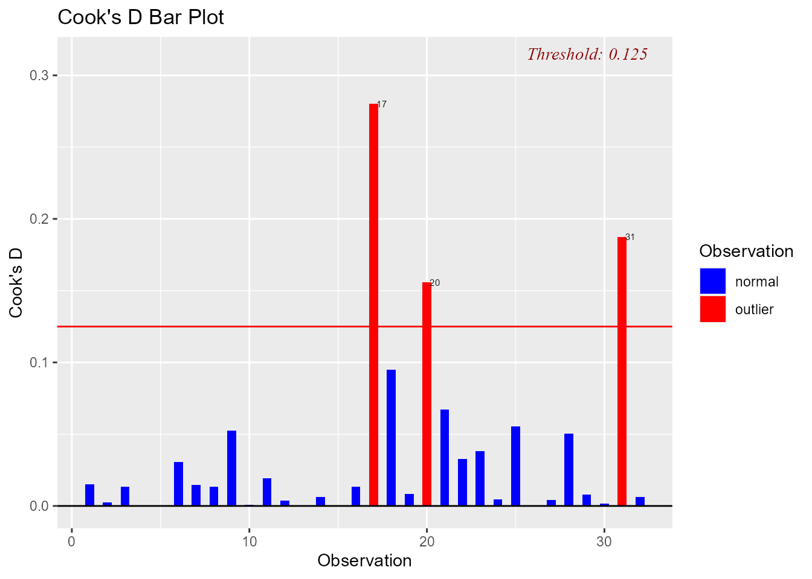
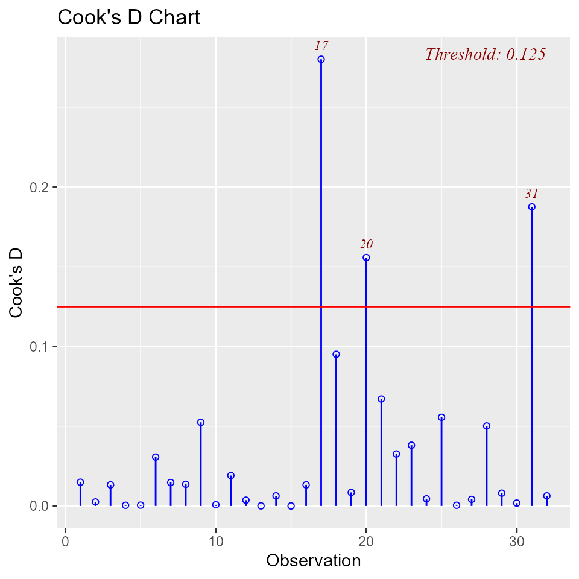
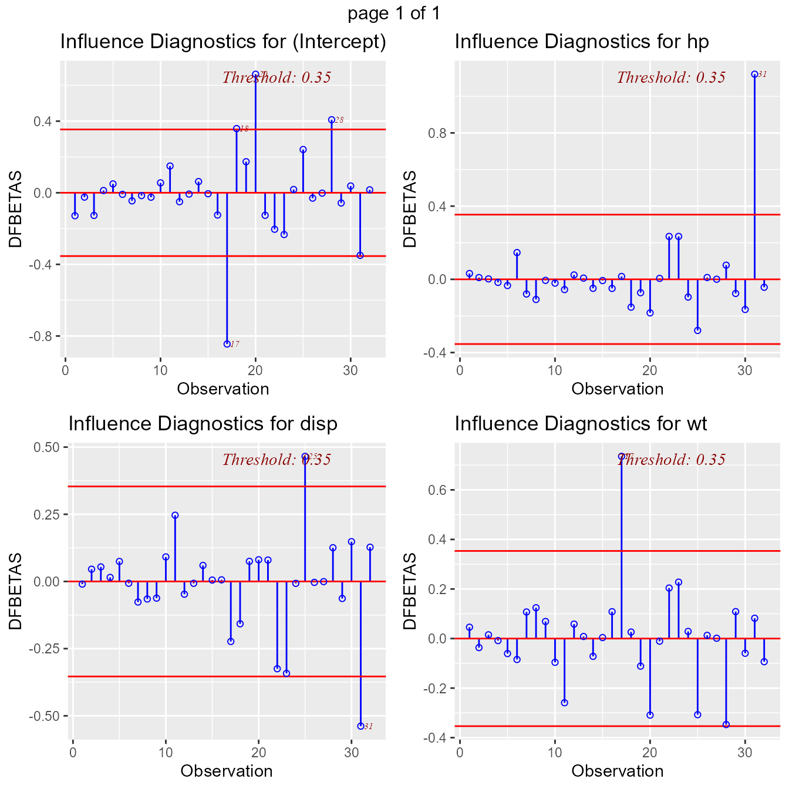
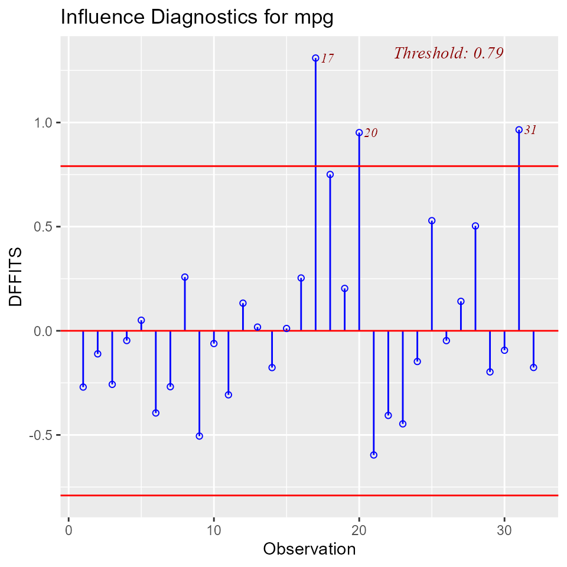
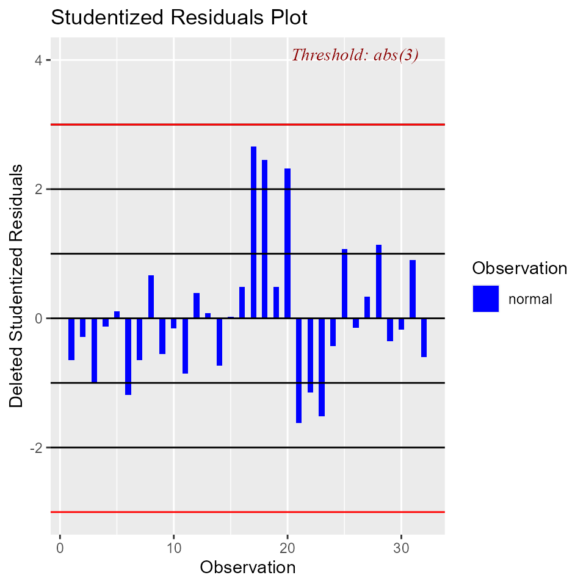
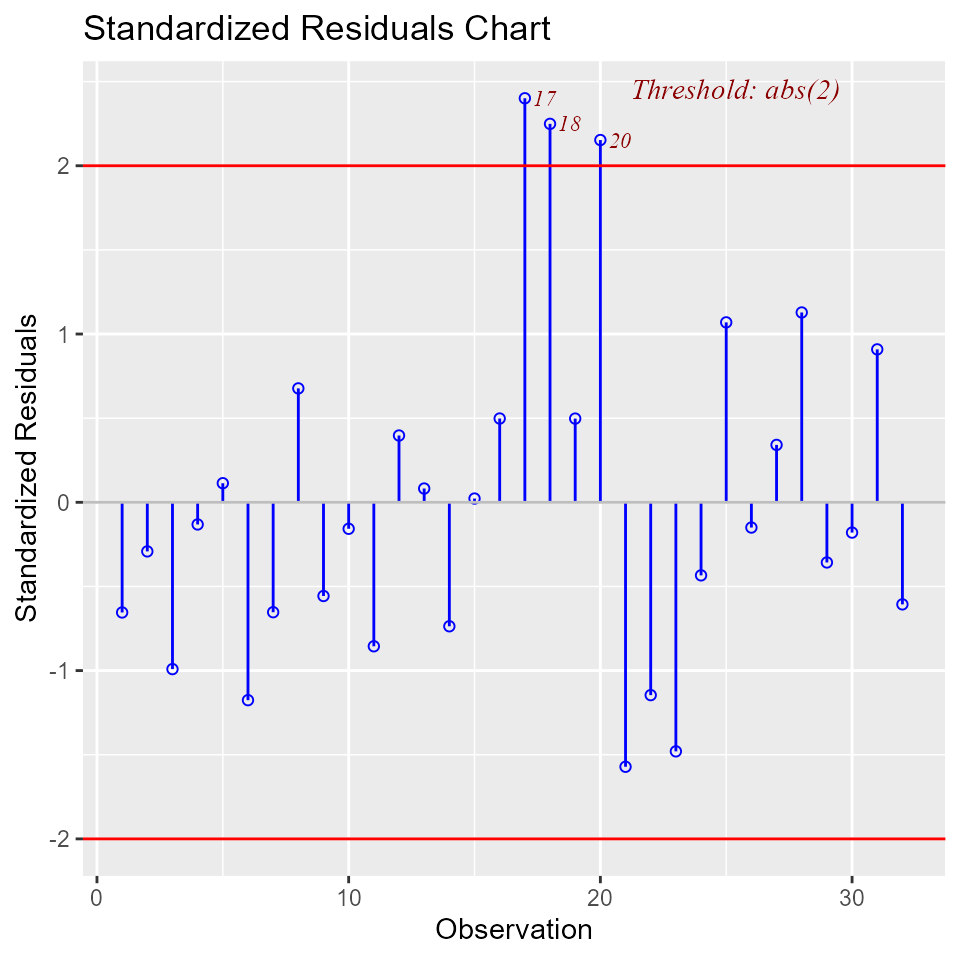
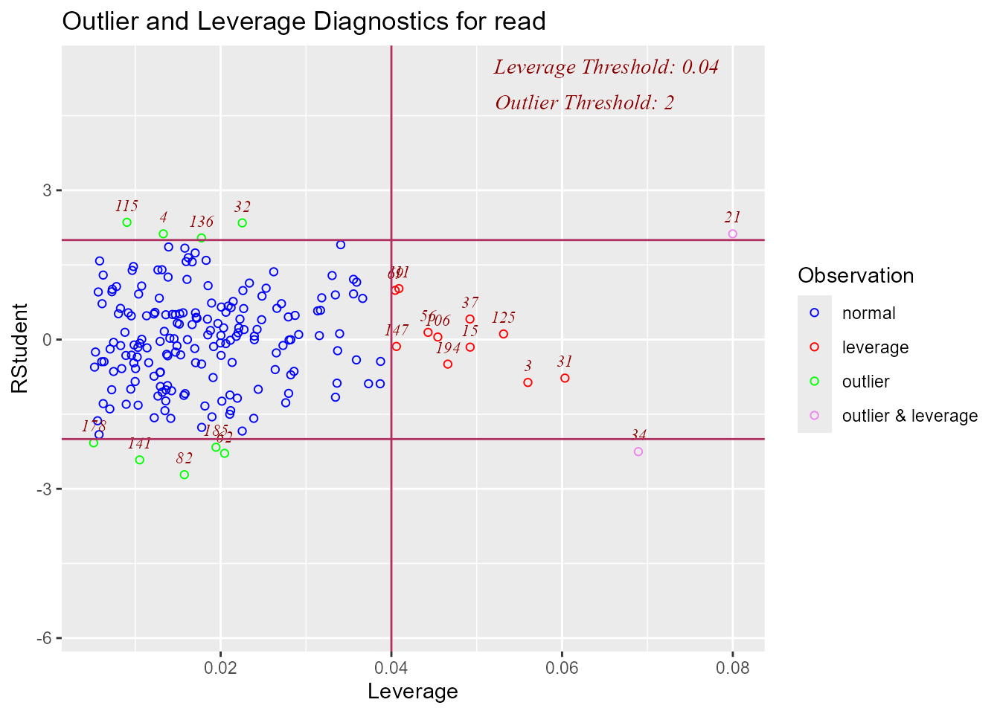
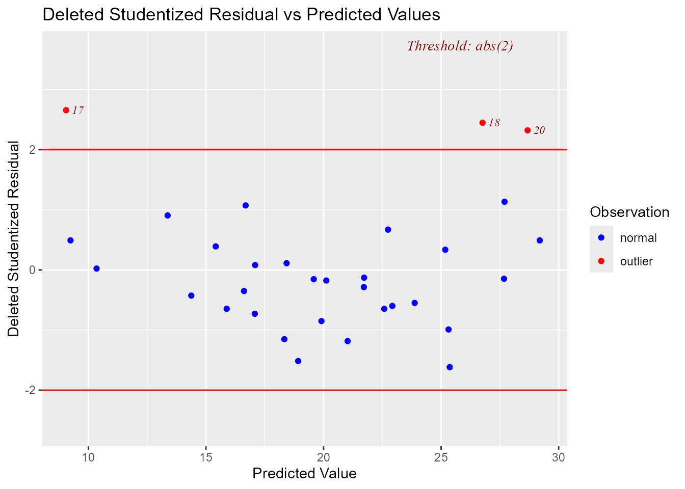
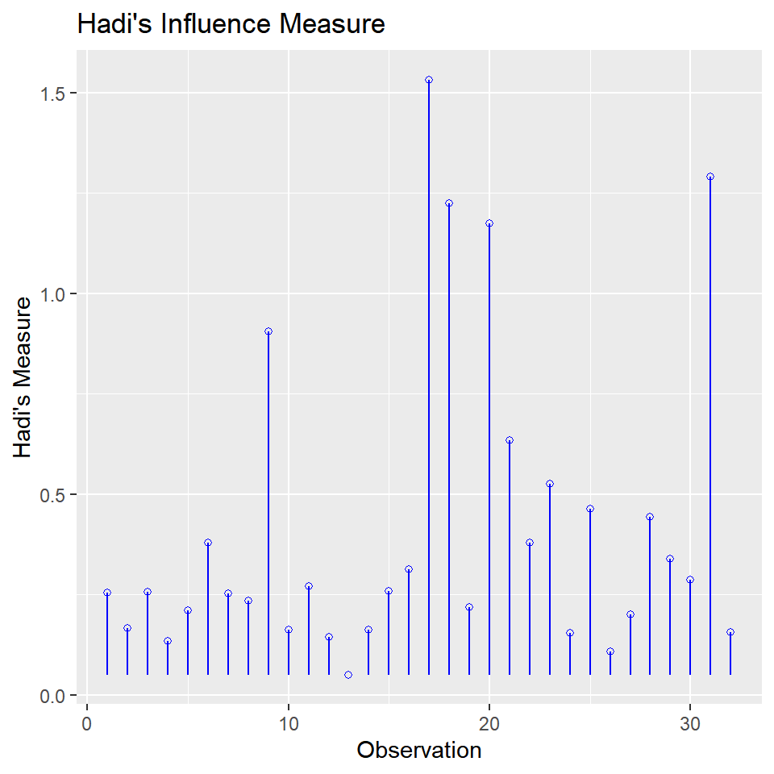
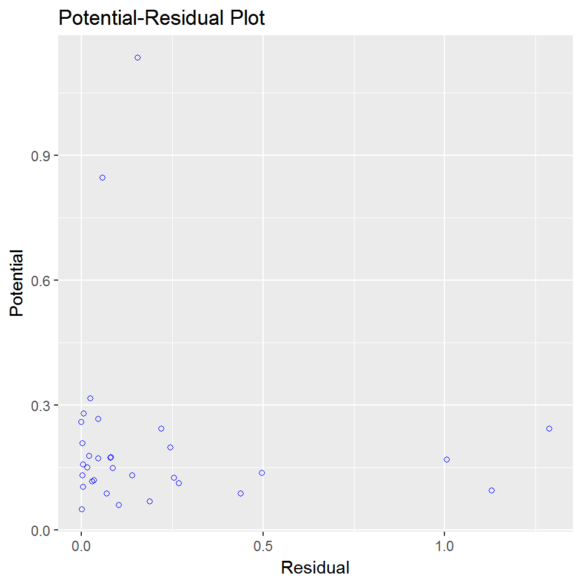

Introduction
It is possible for a single observation to have a great influence on the results of a regression analysis. It is therefore important to detect influential observations and to take them into consideration when interpreting the results.
olsrr offers the following tools to detect influential observations:
- Cook’s D Bar Plot
- Cook’s D Chart
- DFBETAs Panel
- DFFITs Plot
- Studentized Residual Plot
- Standardized Residual Chart
- Studentized Residuals vs Leverage Plot
- Deleted Studentized Residual vs Fitted Values Plot
- Hadi Plot
- Potential Residual Plot
Cook’s D Bar Plot
Bar Plot of Cook’s distance to detect observations that strongly influence fitted values of the model. Cook’s distance was introduced by American statistician R Dennis Cook in 1977. It is used to identify influential data points. It depends on both the residual and leverage i.e it takes it account both the x value and y value of the observation.
Steps to compute Cook’s distance:
- delete observations one at a time.
- refit the regression model on remaining observations
- examine how much all of the fitted values change when the ith observation is deleted.
A data point having a large cook’s d indicates that the data point strongly influences the fitted values.
model <- lm(mpg ~ disp + hp + wt + qsec, data = mtcars)
ols_plot_cooksd_bar(model)
Cook’s D Chart
Chart of Cook’s distance to detect observations that strongly influence fitted values of the model.
model <- lm(mpg ~ disp + hp + wt + qsec, data = mtcars)
ols_plot_cooksd_chart(model)
DFBETAs Panel
DFBETA measures the difference in each parameter estimate with and without the influential point. There is a DFBETA for each data point i.e if there are n observations and k variables, there will be DFBETAs. In general, large values of DFBETAS indicate observations that are influential in estimating a given parameter. Belsley, Kuh, and Welsch recommend 2 as a general cutoff value to indicate influential observations and as a size-adjusted cutoff.
model <- lm(mpg ~ disp + hp + wt, data = mtcars)
ols_plot_dfbetas(model)
DFFITS Plot
Proposed by Welsch and Kuh (1977). It is the scaled difference between the fitted value obtained from the full data and the fitted value obtained by deleting the observation. DFFIT - difference in fits, is used to identify influential data points. It quantifies the number of standard deviations that the fitted value changes when the ith data point is omitted.
Steps to compute DFFITs:
- delete observations one at a time.
- refit the regression model on remaining observations
- examine how much all of the fitted values change when the ith observation is deleted.
An observation is deemed influential if the absolute value of its DFFITS value is greater than:
A size-adjusted cutoff recommended by Belsley, Kuh, and Welsch is
where n is the number of observations and p is the number of predictors including intercept.
olsrr uses the size adjusted cutoff by default.
model <- lm(mpg ~ disp + hp + wt + qsec, data = mtcars)
ols_plot_dffits(model)
Studentized Residual Plot
Plot for detecting outliers. Studentized deleted residuals (or externally studentized residuals) is the deleted residual divided by its estimated standard deviation. Studentized residuals are going to be more effective for detecting outlying Y observations than standardized residuals. If an observation has an externally studentized residual that is larger than 3 (in absolute value) we can call it an outlier.
model <- lm(mpg ~ disp + hp + wt + qsec, data = mtcars)
ols_plot_resid_stud(model)
Standardized Residual Chart
Chart for detecting outliers. Standardized residual (internally studentized) is the residual divided by estimated standard deviation.
model <- lm(mpg ~ disp + hp + wt + qsec, data = mtcars)
ols_plot_resid_stand(model)
Studentized Residuals vs Leverage Plot
Graph for detecting influential observations.
model <- lm(read ~ write + math + science, data = hsb)
ols_plot_resid_lev(model)
Deleted Studentized Residual vs Fitted Values Plot
Graph for detecting outliers.
model <- lm(mpg ~ disp + hp + wt + qsec, data = mtcars)
ols_plot_resid_stud_fit(model)
Hadi Plot
Hadi’s measure of influence based on the fact that influential observations can be present in either the response variable or in the predictors or both. The plot is used to detect influential observations based on Hadi’s measure.
model <- lm(mpg ~ disp + hp + wt + qsec, data = mtcars)
ols_plot_hadi(model)
Potential Residual Plot
Plot to aid in classifying unusual observations as high-leverage points, outliers, or a combination of both.
model <- lm(mpg ~ disp + hp + wt + qsec, data = mtcars)
ols_plot_resid_pot(model)